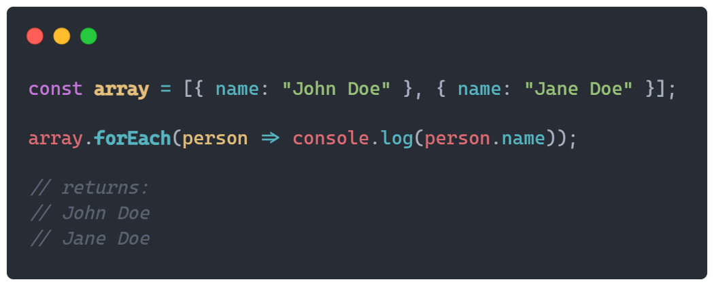
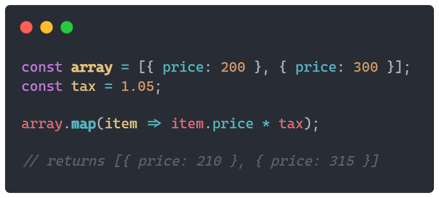
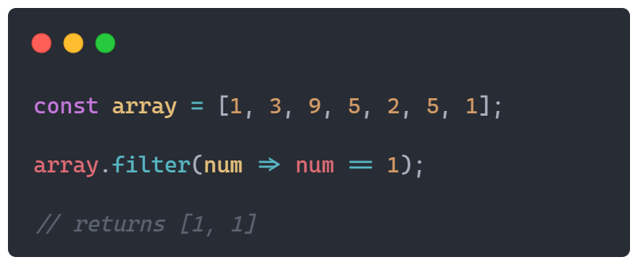
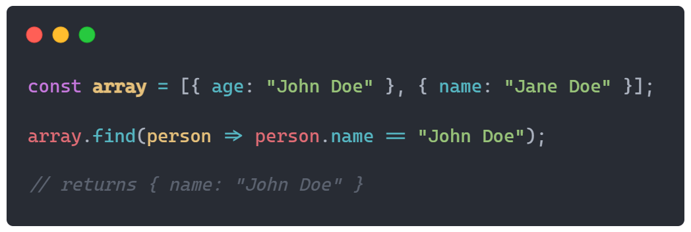

| var | let | const | |
|---|---|---|---|
| 1 | The scope of a var variable is functional scope. |
The scope of a let variable is block scope. |
The scope of a const variable is block scope. |
| 2 | It can be updated and re-declared into the scope. |
It can be updated but cannot be re-declared into the scope. |
It cannot be updated or re-declared into the scope. |
| 3 | It can be declared without initialization. |
It can be declared without initialization. |
It cannot be declared without initialization. |
| 4 | It can be accessed without initialization as its default value is “undefined”. |
It cannot be accessed without initialization otherwise it will give ‘referenceError’. |
It cannot be accessed without initialization, as it cannot be declared without initialization. |
| 5 | hoisting done , with initializing as ‘default’ value |
Hoisting is done , but not initialized (this is the reason for error when we access the let variable before declaration/initialization |
Hoisting is done, but not initialized (this is the reason for error when we access the const variable before declaration/initialization |
Note: Sometimes, users face the problem while working with the var variable as they change the value of it in the particular block. So, users should use the let and const keyword to declare a variable in JavaScript.
| Regular Functions | Arrow Functions | |
|---|---|---|
| 1. Syntax | One very basic difference is that the Regular Functions uses function keyword. |
But Arrow Functions don’t inspite it uses arrow symbol(=>). |
| 2. this keyword | Regular function have its their own this context |
But the Arrow function don’t have their own. Inside an Arrow function this value hold the this value of outer function. |
| 3. Using new keyword | Regular function are constructible and callable. As it are constructible, they can be called using the ‘new’ keyword. |
But the arrow functions are only callable and not constructible. Due to which we will get a run-time error when trying to construct a non-constructible arrow functions using the new keyword. |
| 4. Implicit return | While working with Regular functions return expression statement is used to return the result from the function. It return statement is not available inside the function then udefined is returned from the function. |
But with Arrow function there is one exception where return is not mendatory to return result from the functions. |
| forEach() | map() | filter() | find() | |
|---|---|---|---|---|
| 1 | Function .forEach() is another form of just a plain for loop that can be used to iterate through array items. This case of a function is used for more complex arrays, for example, an array of objects with a lot of entries than just an array of integers. |
Function .map() is a manipulative function that can modify each element’s content in an array that it is called on. This function returns a new array with modified values, the array that it is called on will stay still. This function is useful for adding a little change to an already existing array, for example adding a property to an object or modifying it. Its construction and use are identical to the previous function .forEach() and both can be used interchangeably. |
Function .filter() is a search function that returns all the elements that fulfil the assigned condition. You can search by simple terms, for example, that element is equal to a certain integer, or by more advanced terms, for example, searching for an object with certain property that is equal to something. Both examples have a very frequent use as a developer. |
Function .find() is also a search function like the previous but they differ in one small detail — this function returns only one match in an array. If in an array is more than one result, the function will return the first that has matched. |
| 2 | This function takes 1 parameter .forEach(callback). The parameter callback can take up to 3 parameters element, index & array (but only the element parameter is required, the rest is optional). |
Just like the function .forEach(), this function also takes only 1 parameter .map(callback). The parameter callback can take up to 3 parameters element, index & array (but only the element parameter is required, the rest is optional). |
Just like the function .forEach(), this function also takes only 1 parameter .filter(callback). The parameter callback can take up to 3 parameters element, index & array (but only the element parameter is required, the rest is optional). |
Just like the function .forEach(), this function also takes only 1 parameter .find(callback). The parameter callback can take up to 3 parameters element, index & array (but only the element parameter is required, the rest is optional). |
| 3 | Example: Here is an example of looping through an array of objects with name properties and logging every name into the console:  |
Example: Here is an example of looping through an array of objects with price properties and adding a tax value of 5% to it:  |
Examples: Here is an example of searching by simple terms through an array of integers and finding which elements equal to the value 1:  |
Example: Here is an example of searching by more advanced terms in an array of objects and finding an object with a property name that is equal to John Doe:  |
Template strings are a powerful feature of modern JavaScript released in ES6. It lets us insert/interpolate variables and expressions into strings without needing to concatenate like in older versions of JavaScript. It allows us to create strings that are complex and contain dynamic elements. Another great thing that comes with template strings are tags. Tags are functions that take a string and the decomposed parts of the string as parameters and are great for converting strings to different entities. The syntax for creating template strings is by using backticks to delimit them. For example, we can write: `This is a string`. This is a very simple example of a template string.
Template strings are supported by almost all browsers that are regularly maintained today. The only major one that doesn’t support it right out of the box is Internet Explorer. However, browsers that do not support it can add it with Babel. Node.js also supports it in version 4 or later.
Template strings are the new standard for JavaScript strings. It is much better than strings before ES6 in that it supports interpolating expressions inside strings. We also have tagged templates which are just functions, with the decomposed parts of the template string as parameters. The constant string in the first parameter is the string in a decomposed array form, and the evaluated versions of the expressions in the order they appeared in the string are the remaining arguments. Tagged template functions can return any variable type.
With the raw property of a string, which is available in tags, can get the string with the escape characters unescaped.